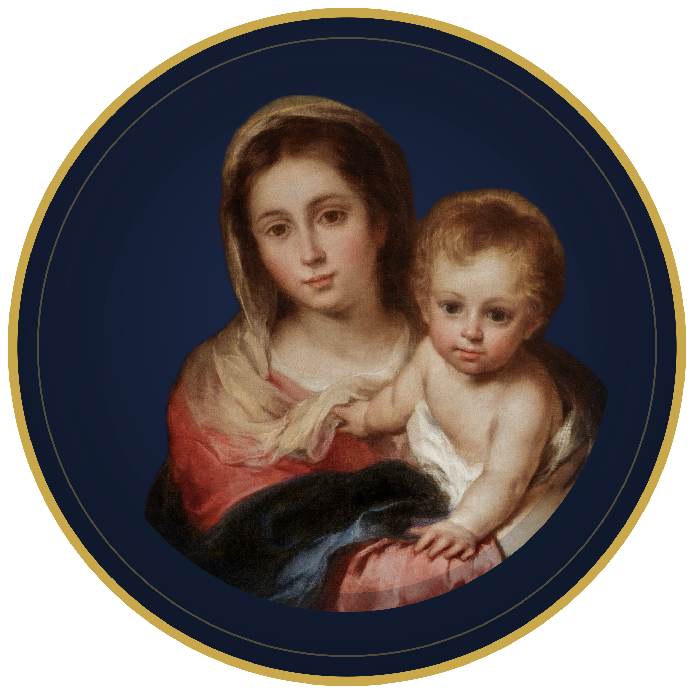

Arca Nossa Senhora da Providência
Educar para a Eternidade, sob o manto da Providência.
Obra de assistência educacional católica
“O fim próprio e imediato da educação cristã é cooperar com a graça divina na formação do verdadeiro e perfeito cristão.”
Toda família católica busca o grande e indispensável bem de uma educação íntegra, tanto intelectual quanto moralmente, para os seus filhos. Sabemos que, nos dias de hoje, os desafios para oferecer uma formação verdadeiramente tradicional e livre dos erros do mundo são imensos — tanto no combate espiritual quanto no aspecto financeiro. É por isso que a Arca Nossa Senhora da Providência nasce com o firme propósito de estender as mãos a essas famílias.
Seja um benfeitor
www.arcaprovidencia.com.br
Aponte a câmera